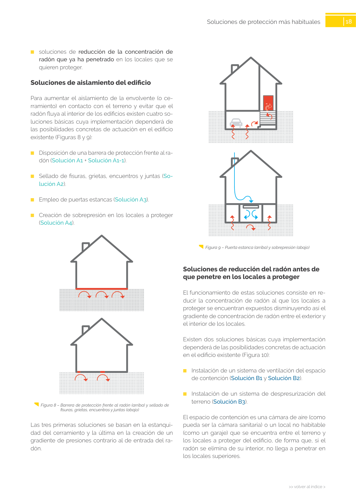

<!doctype html>
<html lang="es"><head><meta charset="utf-8">
<meta name="viewport" content="width=device-width, initial-scale=1">
<title>GUIA · p. 18 — Página 18</title><link rel="stylesheet" href="../estilo.css">
</head><body>
<nav><a href="../index.html">Índice</a> › <a href="../doc/guia-pdf-f3314b0414fe-sin-fecha-e58e54b822cf.html">GUIA</a> › p. 18</nav>

<header class="meta">
<p><strong>GUIA</strong> · Página 18 · versión sin-fecha</p>
<p>SHA256: <code>e58e54b822cf4ab00e258f0eb50c0f06a8c04e3730a7f530d224485e2a5bb02e</code> · página física 18 de 82 · métodos de encabezado
solo si están cotejados.</p>
<p><a href="../doc/guia-pdf-f3314b0414fe-sin-fecha-e58e54b822cf.html">Documento</a> · <a href="guia-pdf-f3314b0414fe-sin-fecha-e58e54b822cf__p0017.html">← p. 17</a> · <a href="guia-pdf-f3314b0414fe-sin-fecha-e58e54b822cf__p0019.html">p. 19 →</a></p>
<p>Formatos: <a href="../../contenido/docs/GUIA-PDF-f3314b0414fe/sin-fecha__e58e54b822cf/pagina/p0018.md">Markdown</a> · <a href="../../contenido/docs/GUIA-PDF-f3314b0414fe/sin-fecha__e58e54b822cf/bloque/p0018.json">JSON de bloques</a> · <a href="../../contenido/docs/GUIA-PDF-f3314b0414fe/sin-fecha__e58e54b822cf/fuente.pdf#page=18">PDF p. 18</a> · <a href="../../contenido/docs/GUIA-PDF-f3314b0414fe/sin-fecha__e58e54b822cf/figura/p0018.png">imagen PNG</a></p>
</header>
<nav class="paginas"><a href="../doc/guia-pdf-f3314b0414fe-sin-fecha-e58e54b822cf.html">Documento</a> <a href="guia-pdf-f3314b0414fe-sin-fecha-e58e54b822cf__p0017.html">← p. 17</a> <a href="guia-pdf-f3314b0414fe-sin-fecha-e58e54b822cf__p0019.html">p. 19 →</a></nav>
<h2>Encabezado de la página</h2><ul><li>Sin encabezado de fuente cotejada en esta página.</li></ul>
<p class="aviso">Página gráfica: el texto extraído puede ser parcial. Prevalece la imagen/PDF; depende de ellos.</p>
<pre class="literal">18
&gt;&gt; volver al índice &gt;
&gt;&gt; volver al índice &gt;
Soluciones de protección más habituales 
  Figura 9 – Puerta estanca (arriba) y sobrepresión (abajo)
Soluciones de reducción del radón antes de 
que penetre en los locales a proteger 
El funcionamiento de estas soluciones consiste en re­
ducir la concentración de radón al que los locales a 
proteger se encuentran expuestos disminuyendo así el 
gradiente de concentración de radón entre el exterior y 
el interior de los locales.
Existen dos soluciones básicas cuya implementación 
dependerá de las posibilidades concretas de actuación 
en el edificio existente (Figura 10):
	
■
Instalación de un sistema de ventilación del espacio 
de contención (Solución B1 y Solución B2).
	
■
Instalación de un sistema de despresurización del 
terreno (Solución B3).
El espacio de contención es una cámara de aire (como 
pueda ser la cámara sanitaria) o un local no habitable 
(como un garaje) que se encuentra entre el terreno y 
los locales a proteger del edificio, de forma que, si el 
radón se elimina de su interior, no llega a penetrar en 
los locales superiores.
	
■
soluciones de reducción de la concentración de 
radón que ya ha penetrado en los locales que se 
quieren proteger.
Soluciones de aislamiento del edificio
Para aumentar el aislamiento de la envolvente (o ce­
rramiento) en contacto con el terreno y evitar que el 
radón fluya al interior de los edificios existen cuatro so­
luciones básicas cuya implementación dependerá de 
las posibilidades concretas de actuación en el edificio 
existente (Figuras 8 y 9):
	
■
Disposición de una barrera de protección frente al ra­
dón (Solución A1 + Solución A1-1).
	
■
Sellado de fisuras, grietas, encuentros y juntas (So­
lución A2).
	
■
Empleo de puertas estancas (Solución A3).
	
■
Creación de sobrepresión en los locales a proteger 
(Solución A4).
  Figura 8 – Barrera de protección frente al radón (arriba) y sellado de 
fisuras, grietas, encuentros y juntas (abajo)
Las tres primeras soluciones se basan en la estanqui­
dad del cerramiento y la última en la creación de un 
gradiente de presiones contrario al de entrada del ra­
dón.
</pre>
<figure><a href="../../contenido/docs/GUIA-PDF-f3314b0414fe/sin-fecha__e58e54b822cf/figura/p0018.png"></a><figcaption>Imagen de la página 18 (PNG ya extraído; prevalece sobre fórmulas).</figcaption></figure>
<h2>Tablas candidatas de esta página</h2><ul><li><a href="../../contenido/docs/GUIA-PDF-f3314b0414fe/sin-fecha__e58e54b822cf/tabla/p0018_t01.json">p0018_t01.json</a> · <a href="../../contenido/docs/GUIA-PDF-f3314b0414fe/sin-fecha__e58e54b822cf/tabla/p0018_t01.csv">.csv</a> (0 × 0; candidata, no reconstruida aquí)</li></ul>
<h2>Referencias, notas y excepciones (página y vecinas)</h2><ul><li><a href="../apartado/guia-pdf-f3314b0414fe-sin-fecha-e58e54b822cf__a0043.html">ID a0043 · ¿Cómo interpretar los resultados obtenidos?</a></li></ul>
<h2>Apartados que incluyen esta página</h2><ul><li><a href="../apartado/guia-pdf-f3314b0414fe-sin-fecha-e58e54b822cf__a0050.html">ID a0050 · Capítulo</a></li><li><a href="../apartado/guia-pdf-f3314b0414fe-sin-fecha-e58e54b822cf__a0051.html">ID a0051 · Soluciones de reducción del radón antes de que penetre en los locales a proteger</a></li><li><a href="../apartado/guia-pdf-f3314b0414fe-sin-fecha-e58e54b822cf__a0052.html">ID a0052 · Soluciones de aislamiento del edificio</a></li></ul>

<footer>Generado estáticamente desde JSON normalizado; sin JavaScript ni servicios externos.
El JSON es la fuente; este HTML es caché reproducible.</footer>
</body></html>
